7. SQL prọject
7.1. Tạo SQL project
Các bước :
File
New
Project (hoặc Ctrl + Shift + N)
Chọn SQL Server Scripts -> đặt tên và đường dẫn
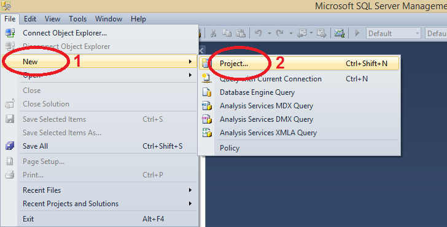
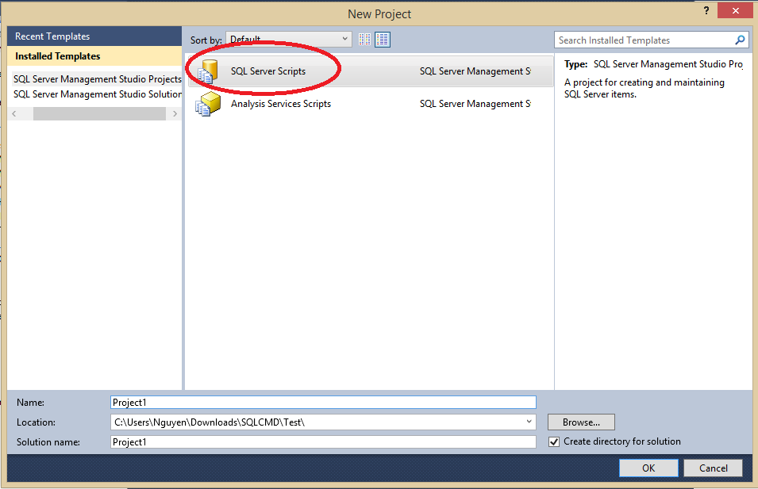
7.2. Tạo connection và queries :
Các bước :
Mở màn hình Solution Explorer (Ctrl + Alt + L)
Connections -> New connection
Queries -> New Query
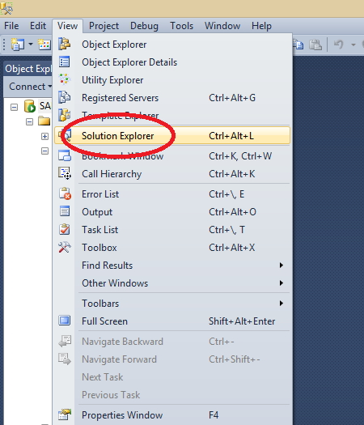
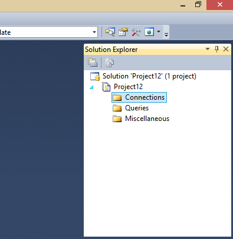
Tạo connection :
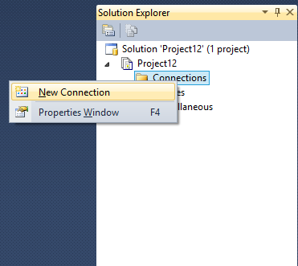
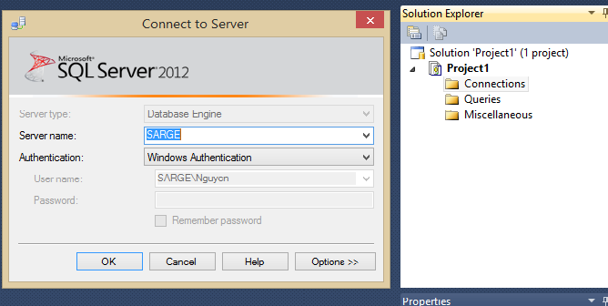
Tạo query
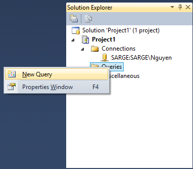
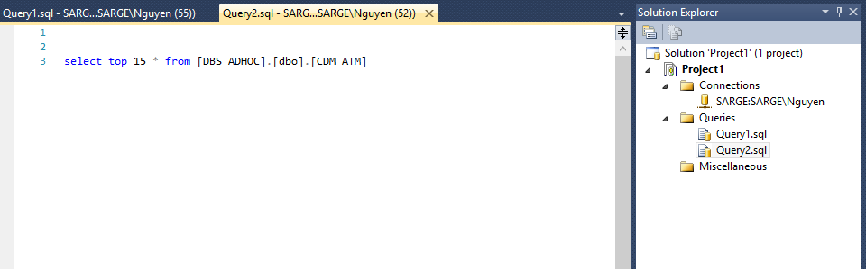
7.3. Đóng project
File -> Close Solution
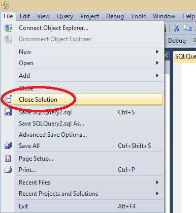
7.4. Mở project đã có sẵn
Các bước :
File
Open
Project/Solution (hoặc Ctrl + Shift + O)
Mở đường dẫn tới project -> chọn file có đuôi .ssmssqlproj
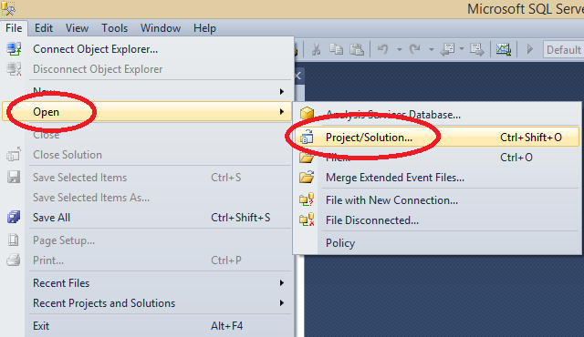
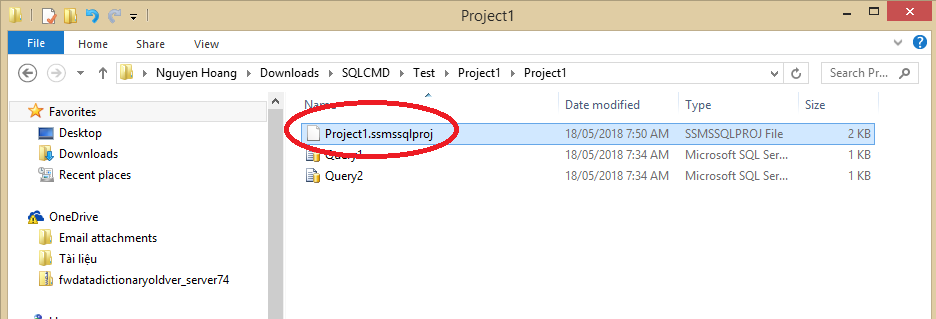